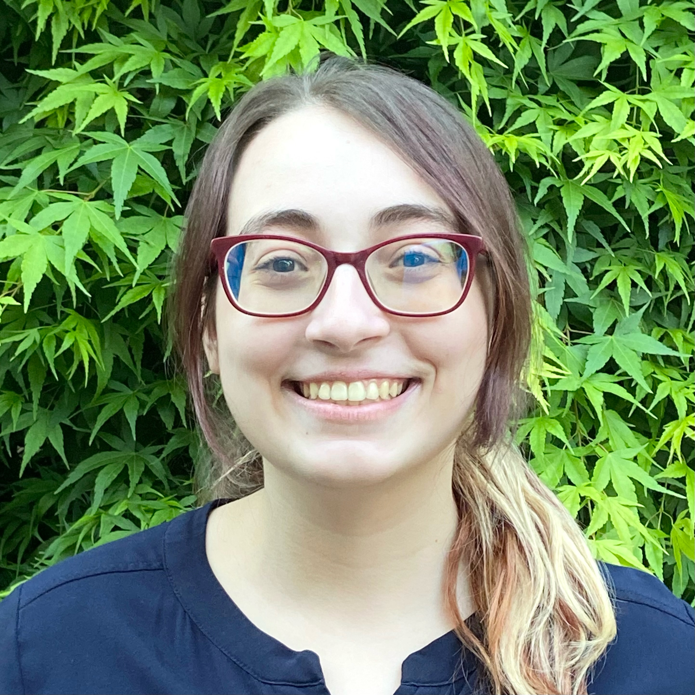

Hi, my name is Ines Machinho Rodrigues and I am currently a student at Simon Fraser University (SFU) majoring in Software Systems.
I moved to Surrey in Fall 2020 to begin my degree at SFU, but after 2 years of being homesick, I decided to take a break to gain my footing before continuing to pursue my degree.
I became very interested in Concept Art and studied at Vancouver Animation School (VANAS) during 2023. In Fall 2024, I decided that I was ready for university again and was looking forward to continuing my learning.
During my spare time, I like to draw, crochet and play video games.
Despite not pursuing a career in Concept Art, I still strive to improve my art skills.
I am also passionate about video games, as I love seeing the storytelling and designs of the characters, environment, and gameplay.
Finally, I picked up crochet in 2020 and have been crocheting ever since! I started an Etsy page as well as an Instagram page to share my crochet projects with others.
For me, crocheting is way to push myself to continue being creative and continue improving my designing and problem solving skills.


I began crocheting as a way to bring my designs to life, and soon discovered others liked my designs just as much as I did.
I first began selling on Facebook Marketplace and other local marketplaces, and had a few returning customers.
Eventually I decided to start an instagram page where I connected with the crochet community.
I called my shop ‘Anicute Shop’ and used a character of mine, named Bok Choya, as the mascot.
After gaining some traction, I started to sell both handmade plushies and patterns of my designs for other crocheters to make on Etsy.
Even more recently, I have begun doing in person markets which has been very fun and new to me!